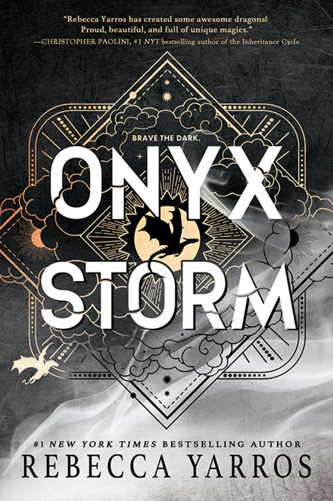

A Court of Thorns and Roses
Sarah J. Maas
In A Court of Thorns and Roses, mortal huntress Feyre kills a faerie wolf and is taken to the magical land of Prythian by Tamlin, a High Fae lord cursed by dark magic. As she falls in love with him, Feyre must endure deadly trials and make heartbreaking sacrifices to break the curse and save his people.
133kr
Buy

Iron flame
Rebecca Yarros
Violet Sorrengail begins her second year at Basgiath War College, where political intrigue, betrayals, and the rising threat of the Venin force her to test her strength, loyalty, and trust in those she loves. As the wards protecting Navarre begin to fail, she discovers devastating secrets about her dragons and Xaden’s dangerous transformation that could change everything.
202kr
Buy

Onyx storm
Rebecca Yarros
After the shattering events of Iron Flame, Violet must rally unlikely allies and uncover ancient magics to face the growing Venin threat while racing to save Xaden from the darkness consuming him. Her journey across kingdoms reveals shocking truths, new dragon powers, and betrayals that leave the fate of her world hanging in the balance.
192kr
Buy

Neuromancer
William Gibson
Washed-up hacker Case is hired by a mysterious employer to pull off a dangerous cyber-heist in a world of artificial intelligence, corporate power, and virtual reality. As he dives into cyberspace, he becomes entangled in a plot that could free a powerful AI and reshape human destiny.
142kr
Buy

Red Rising
Pierce Brown
Darrow, a lowborn “Red” who toils in Mars’ mines, discovers that his people are enslaved under a rigid caste system controlled by the ruling “Golds.” To bring freedom, he infiltrates their elite society, rising through violence and deception to spark rebellion from within.
160kr
Buy

I Who Have Never Known Men
Jacqueline Harpman
Thirty-nine women and one young girl are imprisoned underground without explanation, guarded by silent men. When they escape into a desolate world, the girl—who has no memories of life before captivity—becomes the last witness to humanity’s strange, quiet end.
249kr
Buy

The Handmainds Tale
Margaret Atwood
In the theocratic Republic of Gilead, fertile women called Handmaids are forced to bear children for the ruling elite. Offred struggles to preserve her identity and hope for freedom as she navigates surveillance, oppression, and forbidden love.
239kr
Buy

Brave new World
Aldous Huxley
In a future society built on genetic engineering, consumerism, and strict social conditioning, people are kept docile with pleasure and drugs. When John, a man raised outside this system, confronts its shallow values, the clash exposes the cost of a world without true freedom.
269kr
Buy

1984
George Orwell
Winston Smith lives under a totalitarian regime where Big Brother monitors every thought and truth itself is manipulated. His secret rebellion through love and independent thought leads him into a brutal struggle that shows the terrifying reach of absolute power.
200kr
Buy